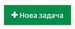
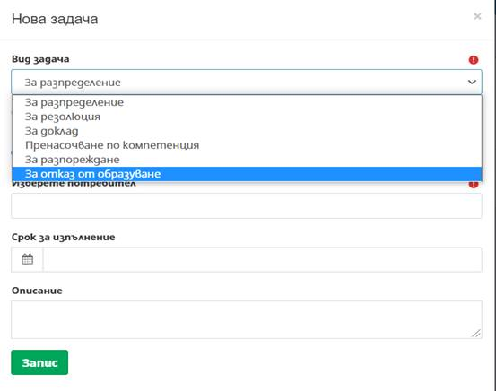
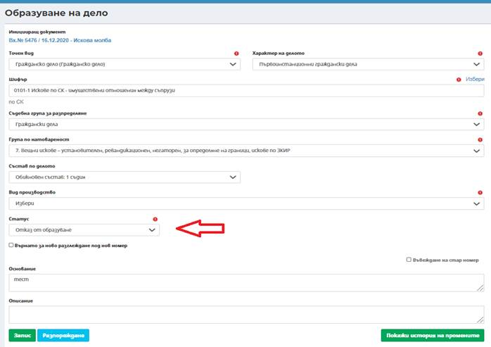
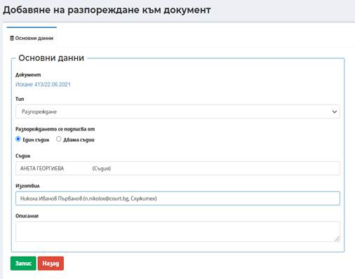
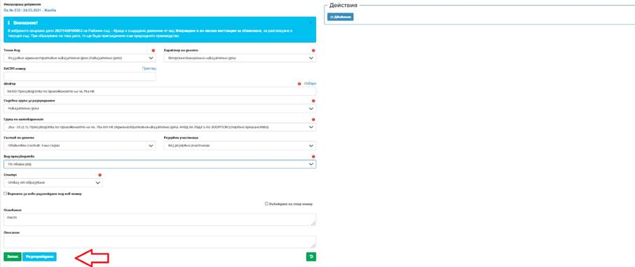

Създаването на нова задача за отказ от образуване става посредством избор на бутон

. Отваря се модален прозорец за попълване на следните данни:

След изпълнение на задачата посредством бутон Изпълни се отваря екран, в който статуса по подразбиране е „отказ от образуване“. Задължително е попълването на поле Основание. След избор на бутон Запис, в долната част на екрана визуализира бутон разпореждане .
Системата позволява разпореждането да се подписва от един съдия или двама съдии.
Важно: Когато разпорежднето е към иницииращ документ и акта не е постановен, то при преглед на акта същият е достъпен само за потребителя, който го е изготвил!
В случаите на отказ от образуване на дело в първоинстанционен съд, се визуализира следния диалогов прозорец, от който чрез бутон Разпореждане системата позволява изготвяне на разпореждане за отказ от образуване.


В случаите, когато има отказ от образуване на дело във второинстанционен съд се изпълняват следните стъпки:
Делото от първоинстанционен съд, което подлежи на обжалване и е изпращтено посредством бутон „Движение“ на вторинстанционен съд, след регистрация във вторинстанционен съд на входящ документ „Жалба“, се свързва към съответното дело и акта, който се обжалва от първата инстанция;
След изпращане на Задача за разпределение и избор в поле Статус на „Отказ от образуване“ се отваря прозорец Разпореждане.

След изготвяне и подписване на Разпореждането, през екран Основни данни на вх. документ, чрез активен линк на текст „Отказано образуване“ се достъпва бутона за отразяване на движението към долна инстанция.
В електронната папка на делото в долния съд, в секция „Свързани дела“ се визуализира отказа от образуване.